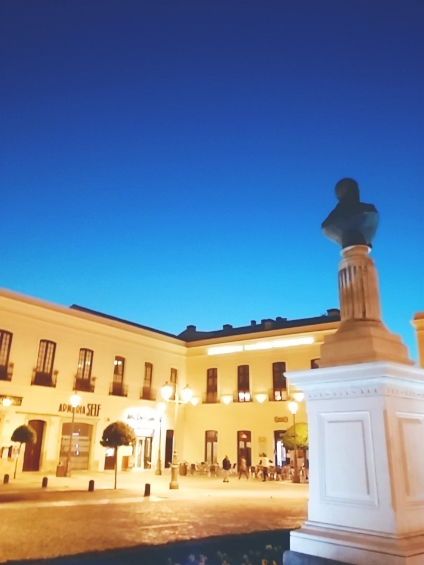
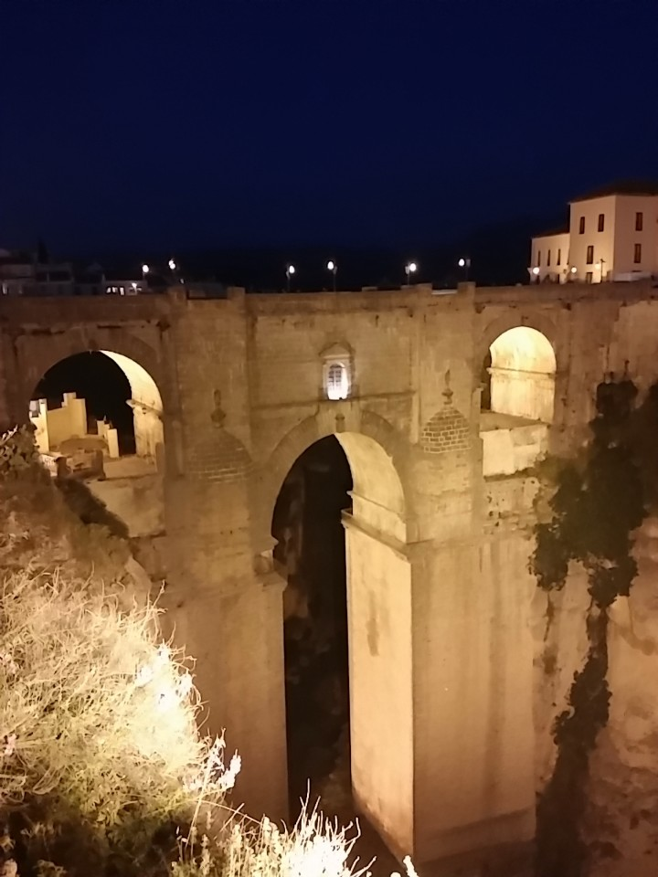
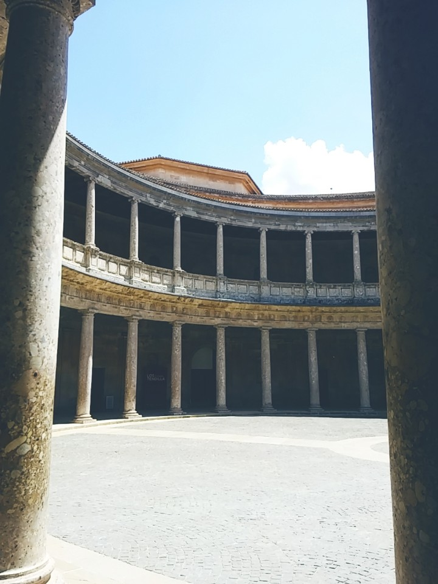

15:34



+6
VACTION SPOT
FAMOUS
FOR COUPLES
Spain of Lights
Balcon de Europa Nerja Spain
4.75
235m
OVERVIEW
Wonderful views of the European balcony from the sea, beach and cliffs to the high mountains. On the left side of the observation
Read More